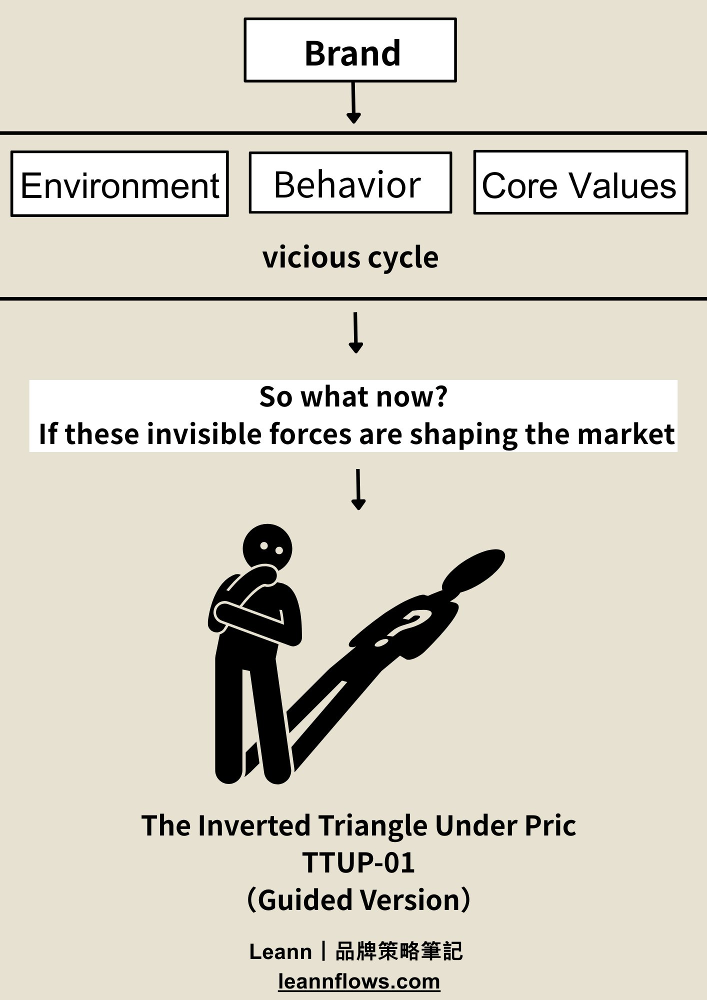
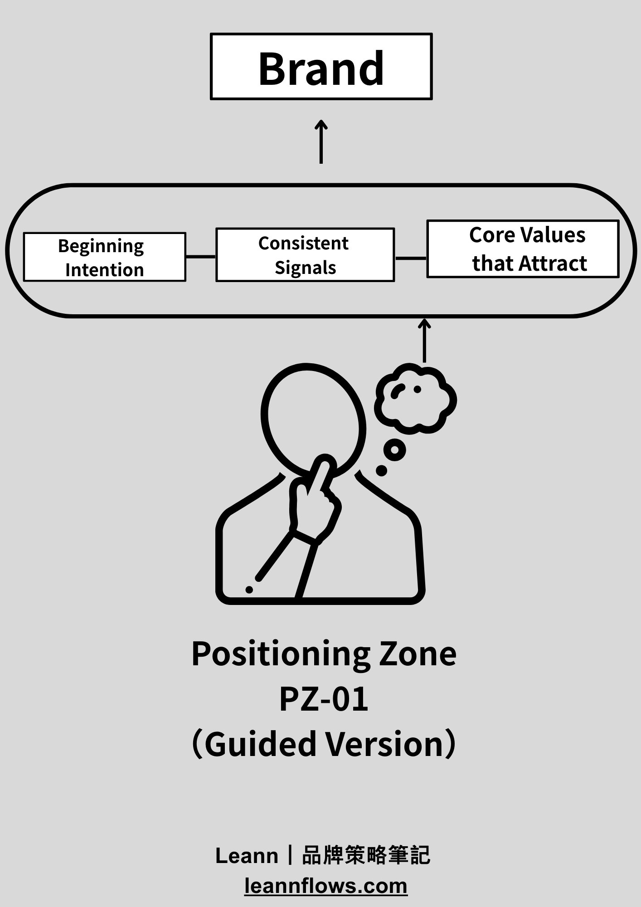
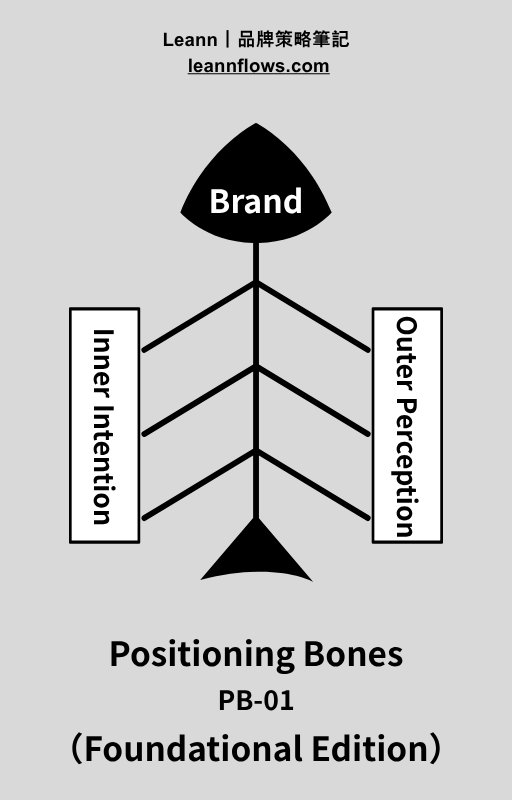
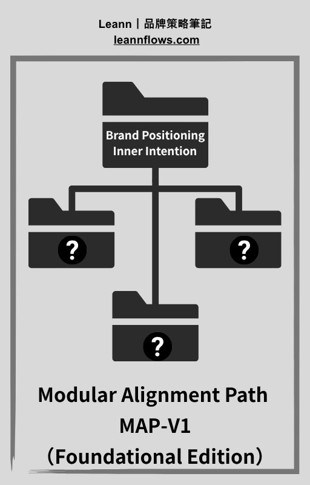
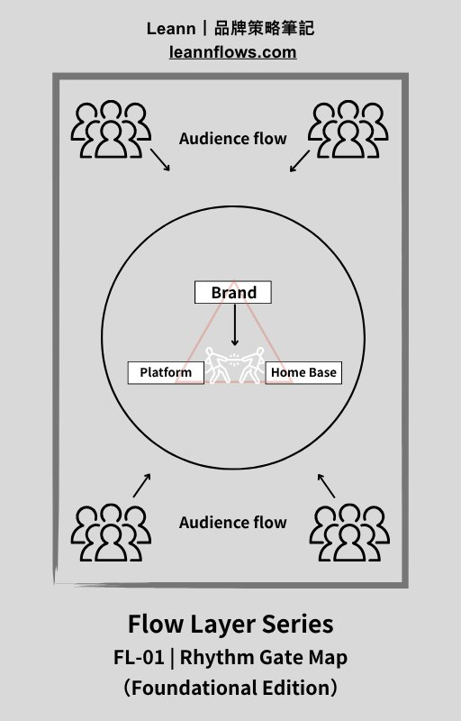

Most brands are built linearly. They launch, optimize, and eventually drift. I designed the Brand Breathing System to replace that drift with a living loop — where inner intention and outer perception circulate, reinforce each other, and grow.
Most brands follow a familiar 6-step path: identify pain point, define values, develop product, build identity, launch, optimize. It works at the start. Over time, it breaks down.
Branding gets reduced to a logo. The connection between values and product becomes oversimplified. There is no language-building process. Alignment across context and rhythm disappears.
The real problem is not the visuals. It's language. Brands don't lack creativity — they lack a sustainable, translatable system of language. Without it, the brand struggles to land in the right context.
The Brand Breathing System replaces the linear model with a closed loop. Every phase reinforces the next, and the loop feeds back into brand intention. Each phase corresponds to one module.
A whitepaper on what it means for a brand to breathe. Not a toolkit. A call to slow down, reclaim clarity, and build a brand that sustains — not just sells. Six chapters covering brand language, market power, founder voice, and system-based strategy.
Download Whitepaper Download FAQ GuideHover over each module to see what it does and where to get it. Each can be used independently or as part of the full system.

For brands stuck in price competition. Diagnose the hidden structure behind pricing confusion and refocus on long-term strategic value.

Clarify your brand's intention before identity. Map the rhythm from beginning intention to consistent signals to core values that attract.

Assess whether internal intentions match how the market perceives you. Identify gaps between inner intention and outer perception.

Bridge internal clarity with external action. Establish a rhythm that connects brand intent with real-world decisions and pacing.

Map how your brand moves across platforms and attracts the right people. Design a rhythm between platform, internal intent, and audience flow.